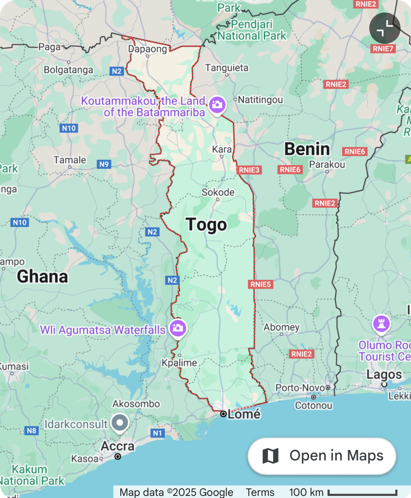
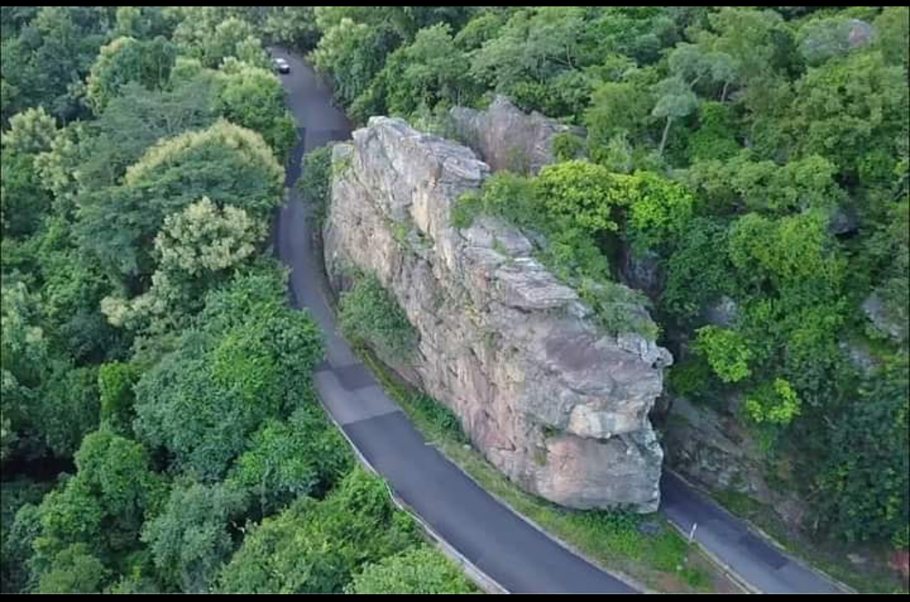
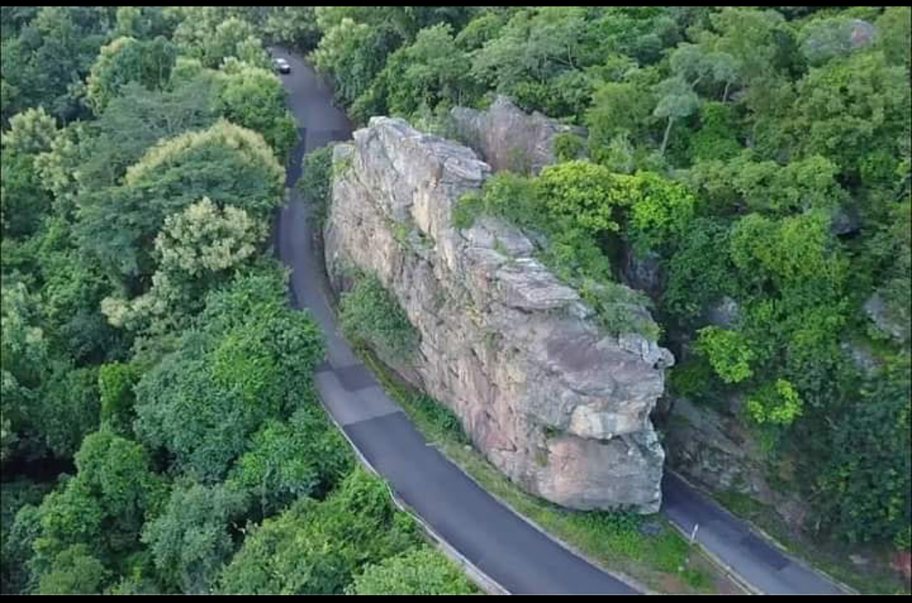

My Visit to Togo – My Home Country
Togo is a country in Western Africa bordering the Bight of Benin. Neighboring countries include Benin, Burkina Faso, and Ghana. The geography of Togo is characterized by a rolling savanna in the north, hills in the central region, and a savanna, woodland plateau, and coastal plain in the south.
Explore More About Togo's Geography
 

One of the most remarkable geographical features in Togo is the Atakora Mountain Range, which includes Mount Agou—the highest point in the country. These mountains provide a cooler climate, lush vegetation, and breathtaking views. The region is known for hiking, waterfalls, and traditional villages nestled in the hills.
Family Time at Togo